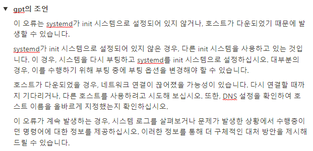
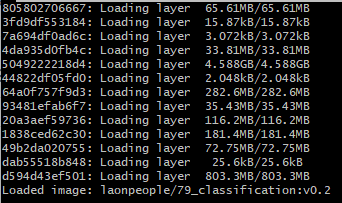
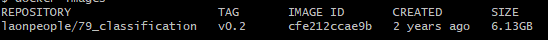
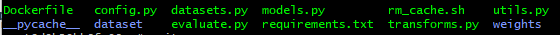
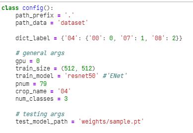
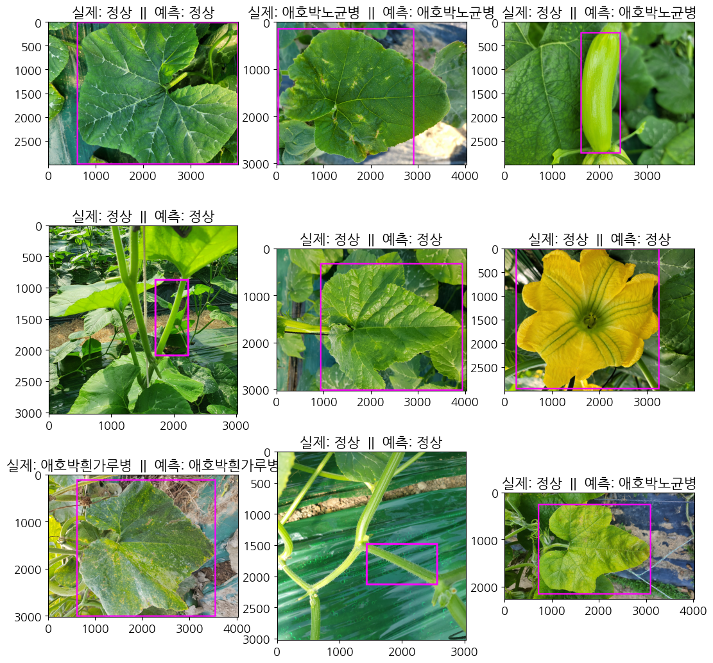

import pickle
import os
from tqdm import tqdm
import random
import numpy as np
import torch
import torch.nn as nn
import torchvision.models as models
from torchsummary import summary
from sklearn.metrics import accuracy_score, precision_score, recall_score, f1_score
from PIL import Image, ImageDraw
import albumentations
import matplotlib.pyplot as plt
plt.rc("font", family="NanumGothic", size=13)
import warnings
warnings.filterwarnings('ignore')🪴 [cropdoctor] 인공지능 기반 웹서비스 개발 프로젝트
2. tar 확장자 모델 docker image 불러오기
01. docker 로 tar 파일 불러오기
aihub에서 예시 모델을 하나 제공해주어서 그것을 베이스라인 모델로 선정하고자 했습니다. 해당 모델을 사용하기 위해, tar 확장자로 저장되어 있는 aihub의 예시 모델을 docker로 불러와야 했습니다.
1) 모델 불러오기 오류
프로젝트에서 제공받은 VM의 리눅스 터미널에서 모델 불러오는 것을 시도하였습니다. >docker load -i 73.tar
Cannot connect to the Docker daemon at unix:///var/run/docker.sock. Is the docker daemon running?
하지만 위와 같은 오류가 났습니다.
따라서 데몬이 실행중인지 확인하기 위하여 다음과 같은 명령어를 실행하였습니다.
sudo systemctl status docker
System has not been booted with systemd as init system (PID 1). Can’t operate. Failed to connect to bus: Host is down 또 다른 오류를 보았습니다.
구글링과 chat gpt에 열심히 질문하면서 해결을 시도하였지만 성공하지 못했습니다.  그 당시 노션에 메모해뒀던 오류의 원인입니다.
마침내 운영진쪽에서 docker를 지원하지 않는 VM이라는 말을 전해듣고, 다른 방법을 택했습니다. 허탈했지만 해결 안되던게 정상이어서 한편으로는 다행이었습니다.
2) 로컬에서 불러와서 VM에 올리기
VM에서 모델을 불러올 수 없으니, 로컬 git bash에서 명령어를 실행하는 방법을 선택했습니다.
- 도커 이미지 불러오기
docker load -i 73.tar

모델 불러올 당시 컴퓨터가 멈추고 화면이 까맣게 변했던 기억이 납니다. 다행히 그 와중에도 git bash는 꺼지지 않고 계속 모델이 로드되고 있었습니다.
- 도커 이미지 확인하기
docker images

도커 이미지가 잘 불러와진 것을 확인할 수 있습니다.
- 도커 컨테이너 실행시키기
docker run -it laonpeople/79_classification:v0.2 ls

도커 컨테이너를 실행시키고, 그 안에서 파일 목록을 확인해 보았습니다. 드디어 aihub에서 제공해준 모델 파일들을 확인하는 데 성공했습니다.
- 도커 컨테이너 -> 로컬 복사하기
로컬에서 모델을 로드했기 때문에 프로젝트 작업을 진행하는 VM으로 파일들을 옮겨야 했습니다. 따라서 도커 컨테이너 -> 로컬 -> 프로젝트 VM 의 순서로 파일을 옮기기로 했습니다.
docker run -d –name con laonpeople/79_classification:v0.2
우선 도커 컨테이너를 -d 옵션으로 백그라운드에서 실행시킵니다. 이 때, –name 옵션으로 컨테이너 이름을 con으로 지정해주었습니다.
docker cp con:/ C:/Users/sooki/Downloads/docker
그 다음, docker cp [컨테이너이름]:[파일위치] [로컬파일위치] 명령어를 사용하여 로컬에 무사히 파일들을 옮겼습니다.
이제 로컬에서 VM jupyter-lab 환경에 드래그앤드랍으로 파일을 최종적으로 옮겨주었습니다.
- VM에서 필요한 패키지 설치하기
pip install -r requirements.txt
requirements.txt 파일에 필요한 패키지가 들어있었습니다. 이를 vm에서 모두 설치해주면, aihub 모델 불러올 준비를 모두 마치게 됩니다.
이름 변환 딕셔너리
disease2name = {
0: "정상",
1: "고추탄저병",
2: "고추흰가루병",
3: "무검은무늬병",
4: "무노균병",
5: "배추검음썩음병",
6: "배추노균병",
7: "애호박노균병",
8: "애호박흰가루병",
9: "양배추균핵병",
10: "양배추무름병",
11: "오이노균병",
12: "오이흰가루병",
13: "콩불마름병",
14: "콩점무늬병",
15: "토마토잎마름병",
16: "파검은무늬병",
17: "파노균병",
18: "파녹병",
19: "호박노균병",
20: "호박흰가루병"}02. 모델 불러와서 성능 평가해보기

config 파일을 보니 04작물에 대해서 3개의 클래스로 분류하는 모델인 것으로 보입니다. 즉 애호박 에 대해서만 정상/ 질병1 / 질병2 이렇게 분류하는 모델입니다. 레이블이 다르므로 학습에 사용하지는 않고, 성능이 얼마정도 나오는지만 확인해보겠습니다.
모델 불러오기
model_path = "docker/weights/sample.pt"
device = torch.device("cuda")
model_weights = torch.load(model_path, map_location=device)["model_state_dict"]학습된 모델 구조
import torch.nn as nn
import torchvision.models as models
dict_backbone = {'resnet50' : models.resnet50}
def get_model(model_name='resnet50', num_classes=3, pretrained=False): # use pretrained backbone
assert model_name in dict_backbone.keys()
network = dict_backbone[model_name](pretrained=pretrained)
network.fc = nn.Linear(network.fc.in_features, num_classes)
return networkmodel = get_model()
model.load_state_dict(model_weights)
model = model.to(device)모델 요약
summary(model, input_size=(3, 512, 512))----------------------------------------------------------------
Layer (type) Output Shape Param #
================================================================
Conv2d-1 [-1, 64, 112, 112] 9,408
BatchNorm2d-2 [-1, 64, 112, 112] 128
ReLU-3 [-1, 64, 112, 112] 0
MaxPool2d-4 [-1, 64, 56, 56] 0
Conv2d-5 [-1, 64, 56, 56] 4,096
BatchNorm2d-6 [-1, 64, 56, 56] 128
ReLU-7 [-1, 64, 56, 56] 0
Conv2d-8 [-1, 64, 56, 56] 36,864
BatchNorm2d-9 [-1, 64, 56, 56] 128
ReLU-10 [-1, 64, 56, 56] 0
Conv2d-11 [-1, 256, 56, 56] 16,384
BatchNorm2d-12 [-1, 256, 56, 56] 512
Conv2d-13 [-1, 256, 56, 56] 16,384
BatchNorm2d-14 [-1, 256, 56, 56] 512
ReLU-15 [-1, 256, 56, 56] 0
Bottleneck-16 [-1, 256, 56, 56] 0
Conv2d-17 [-1, 64, 56, 56] 16,384
BatchNorm2d-18 [-1, 64, 56, 56] 128
ReLU-19 [-1, 64, 56, 56] 0
Conv2d-20 [-1, 64, 56, 56] 36,864
BatchNorm2d-21 [-1, 64, 56, 56] 128
ReLU-22 [-1, 64, 56, 56] 0
Conv2d-23 [-1, 256, 56, 56] 16,384
BatchNorm2d-24 [-1, 256, 56, 56] 512
ReLU-25 [-1, 256, 56, 56] 0
Bottleneck-26 [-1, 256, 56, 56] 0
Conv2d-27 [-1, 64, 56, 56] 16,384
BatchNorm2d-28 [-1, 64, 56, 56] 128
ReLU-29 [-1, 64, 56, 56] 0
Conv2d-30 [-1, 64, 56, 56] 36,864
BatchNorm2d-31 [-1, 64, 56, 56] 128
ReLU-32 [-1, 64, 56, 56] 0
Conv2d-33 [-1, 256, 56, 56] 16,384
BatchNorm2d-34 [-1, 256, 56, 56] 512
ReLU-35 [-1, 256, 56, 56] 0
Bottleneck-36 [-1, 256, 56, 56] 0
Conv2d-37 [-1, 128, 56, 56] 32,768
BatchNorm2d-38 [-1, 128, 56, 56] 256
ReLU-39 [-1, 128, 56, 56] 0
Conv2d-40 [-1, 128, 28, 28] 147,456
BatchNorm2d-41 [-1, 128, 28, 28] 256
ReLU-42 [-1, 128, 28, 28] 0
Conv2d-43 [-1, 512, 28, 28] 65,536
BatchNorm2d-44 [-1, 512, 28, 28] 1,024
Conv2d-45 [-1, 512, 28, 28] 131,072
BatchNorm2d-46 [-1, 512, 28, 28] 1,024
ReLU-47 [-1, 512, 28, 28] 0
Bottleneck-48 [-1, 512, 28, 28] 0
Conv2d-49 [-1, 128, 28, 28] 65,536
BatchNorm2d-50 [-1, 128, 28, 28] 256
ReLU-51 [-1, 128, 28, 28] 0
Conv2d-52 [-1, 128, 28, 28] 147,456
BatchNorm2d-53 [-1, 128, 28, 28] 256
ReLU-54 [-1, 128, 28, 28] 0
Conv2d-55 [-1, 512, 28, 28] 65,536
BatchNorm2d-56 [-1, 512, 28, 28] 1,024
ReLU-57 [-1, 512, 28, 28] 0
Bottleneck-58 [-1, 512, 28, 28] 0
Conv2d-59 [-1, 128, 28, 28] 65,536
BatchNorm2d-60 [-1, 128, 28, 28] 256
ReLU-61 [-1, 128, 28, 28] 0
Conv2d-62 [-1, 128, 28, 28] 147,456
BatchNorm2d-63 [-1, 128, 28, 28] 256
ReLU-64 [-1, 128, 28, 28] 0
Conv2d-65 [-1, 512, 28, 28] 65,536
BatchNorm2d-66 [-1, 512, 28, 28] 1,024
ReLU-67 [-1, 512, 28, 28] 0
Bottleneck-68 [-1, 512, 28, 28] 0
Conv2d-69 [-1, 128, 28, 28] 65,536
BatchNorm2d-70 [-1, 128, 28, 28] 256
ReLU-71 [-1, 128, 28, 28] 0
Conv2d-72 [-1, 128, 28, 28] 147,456
BatchNorm2d-73 [-1, 128, 28, 28] 256
ReLU-74 [-1, 128, 28, 28] 0
Conv2d-75 [-1, 512, 28, 28] 65,536
BatchNorm2d-76 [-1, 512, 28, 28] 1,024
ReLU-77 [-1, 512, 28, 28] 0
Bottleneck-78 [-1, 512, 28, 28] 0
Conv2d-79 [-1, 256, 28, 28] 131,072
BatchNorm2d-80 [-1, 256, 28, 28] 512
ReLU-81 [-1, 256, 28, 28] 0
Conv2d-82 [-1, 256, 14, 14] 589,824
BatchNorm2d-83 [-1, 256, 14, 14] 512
ReLU-84 [-1, 256, 14, 14] 0
Conv2d-85 [-1, 1024, 14, 14] 262,144
BatchNorm2d-86 [-1, 1024, 14, 14] 2,048
Conv2d-87 [-1, 1024, 14, 14] 524,288
BatchNorm2d-88 [-1, 1024, 14, 14] 2,048
ReLU-89 [-1, 1024, 14, 14] 0
Bottleneck-90 [-1, 1024, 14, 14] 0
Conv2d-91 [-1, 256, 14, 14] 262,144
BatchNorm2d-92 [-1, 256, 14, 14] 512
ReLU-93 [-1, 256, 14, 14] 0
Conv2d-94 [-1, 256, 14, 14] 589,824
BatchNorm2d-95 [-1, 256, 14, 14] 512
ReLU-96 [-1, 256, 14, 14] 0
Conv2d-97 [-1, 1024, 14, 14] 262,144
BatchNorm2d-98 [-1, 1024, 14, 14] 2,048
ReLU-99 [-1, 1024, 14, 14] 0
Bottleneck-100 [-1, 1024, 14, 14] 0
Conv2d-101 [-1, 256, 14, 14] 262,144
BatchNorm2d-102 [-1, 256, 14, 14] 512
ReLU-103 [-1, 256, 14, 14] 0
Conv2d-104 [-1, 256, 14, 14] 589,824
BatchNorm2d-105 [-1, 256, 14, 14] 512
ReLU-106 [-1, 256, 14, 14] 0
Conv2d-107 [-1, 1024, 14, 14] 262,144
BatchNorm2d-108 [-1, 1024, 14, 14] 2,048
ReLU-109 [-1, 1024, 14, 14] 0
Bottleneck-110 [-1, 1024, 14, 14] 0
Conv2d-111 [-1, 256, 14, 14] 262,144
BatchNorm2d-112 [-1, 256, 14, 14] 512
ReLU-113 [-1, 256, 14, 14] 0
Conv2d-114 [-1, 256, 14, 14] 589,824
BatchNorm2d-115 [-1, 256, 14, 14] 512
ReLU-116 [-1, 256, 14, 14] 0
Conv2d-117 [-1, 1024, 14, 14] 262,144
BatchNorm2d-118 [-1, 1024, 14, 14] 2,048
ReLU-119 [-1, 1024, 14, 14] 0
Bottleneck-120 [-1, 1024, 14, 14] 0
Conv2d-121 [-1, 256, 14, 14] 262,144
BatchNorm2d-122 [-1, 256, 14, 14] 512
ReLU-123 [-1, 256, 14, 14] 0
Conv2d-124 [-1, 256, 14, 14] 589,824
BatchNorm2d-125 [-1, 256, 14, 14] 512
ReLU-126 [-1, 256, 14, 14] 0
Conv2d-127 [-1, 1024, 14, 14] 262,144
BatchNorm2d-128 [-1, 1024, 14, 14] 2,048
ReLU-129 [-1, 1024, 14, 14] 0
Bottleneck-130 [-1, 1024, 14, 14] 0
Conv2d-131 [-1, 256, 14, 14] 262,144
BatchNorm2d-132 [-1, 256, 14, 14] 512
ReLU-133 [-1, 256, 14, 14] 0
Conv2d-134 [-1, 256, 14, 14] 589,824
BatchNorm2d-135 [-1, 256, 14, 14] 512
ReLU-136 [-1, 256, 14, 14] 0
Conv2d-137 [-1, 1024, 14, 14] 262,144
BatchNorm2d-138 [-1, 1024, 14, 14] 2,048
ReLU-139 [-1, 1024, 14, 14] 0
Bottleneck-140 [-1, 1024, 14, 14] 0
Conv2d-141 [-1, 512, 14, 14] 524,288
BatchNorm2d-142 [-1, 512, 14, 14] 1,024
ReLU-143 [-1, 512, 14, 14] 0
Conv2d-144 [-1, 512, 7, 7] 2,359,296
BatchNorm2d-145 [-1, 512, 7, 7] 1,024
ReLU-146 [-1, 512, 7, 7] 0
Conv2d-147 [-1, 2048, 7, 7] 1,048,576
BatchNorm2d-148 [-1, 2048, 7, 7] 4,096
Conv2d-149 [-1, 2048, 7, 7] 2,097,152
BatchNorm2d-150 [-1, 2048, 7, 7] 4,096
ReLU-151 [-1, 2048, 7, 7] 0
Bottleneck-152 [-1, 2048, 7, 7] 0
Conv2d-153 [-1, 512, 7, 7] 1,048,576
BatchNorm2d-154 [-1, 512, 7, 7] 1,024
ReLU-155 [-1, 512, 7, 7] 0
Conv2d-156 [-1, 512, 7, 7] 2,359,296
BatchNorm2d-157 [-1, 512, 7, 7] 1,024
ReLU-158 [-1, 512, 7, 7] 0
Conv2d-159 [-1, 2048, 7, 7] 1,048,576
BatchNorm2d-160 [-1, 2048, 7, 7] 4,096
ReLU-161 [-1, 2048, 7, 7] 0
Bottleneck-162 [-1, 2048, 7, 7] 0
Conv2d-163 [-1, 512, 7, 7] 1,048,576
BatchNorm2d-164 [-1, 512, 7, 7] 1,024
ReLU-165 [-1, 512, 7, 7] 0
Conv2d-166 [-1, 512, 7, 7] 2,359,296
BatchNorm2d-167 [-1, 512, 7, 7] 1,024
ReLU-168 [-1, 512, 7, 7] 0
Conv2d-169 [-1, 2048, 7, 7] 1,048,576
BatchNorm2d-170 [-1, 2048, 7, 7] 4,096
ReLU-171 [-1, 2048, 7, 7] 0
Bottleneck-172 [-1, 2048, 7, 7] 0
AdaptiveAvgPool2d-173 [-1, 2048, 1, 1] 0
Linear-174 [-1, 3] 6,147
================================================================
Total params: 23,514,179
Trainable params: 23,514,179
Non-trainable params: 0
----------------------------------------------------------------
Input size (MB): 0.57
Forward/backward pass size (MB): 286.55
Params size (MB): 89.70
Estimated Total Size (MB): 376.82
----------------------------------------------------------------모델의 구조를 확인해보니 resnet 기반의 output이 3개인 애호박 분류기 모델이었습니다.
샘플 데이터셋 구축 (애호박)
docker/transforms.py 에서 직접 확인해보니, 학습된 모델의 이미지 전처리 파이프라인은 다음과 같았습니다. 똑같이 test_aug변수에 넣어 데이터셋을 구축하였습니다.
test_aug = albumentations.Compose([
albumentations.Resize(512, 512),
albumentations.Normalize(mean=[0.485, 0.456, 0.406],
std=[0.229, 0.224, 0.225],
max_pixel_value=255.0,
p=1.0)], p=1.0)# validation
with open("data_preprocessing/dic_img2label_val.pickle","rb") as fr:
dic_img2label_val = pickle.load(fr)# 애호박 데이터만 불러오기
lst_valid_img = "data/validation/images/애호박"dict_label = {0: 0, 7: 1, 8: 2}
validX = []
validY = []
lst_img = []
for img_name in tqdm(lst_valid_img):
np_img = np.array(Image.open(path_valid_img + img_name))
transformed_img = test_aug(image=np_img)['image']
validX.append(transformed_img)
validY.append(dict_label[dic_img2label_val[img_name]['disease']])
lst_img.append(img_name)100%|██████████| 1479/1479 [02:07<00:00, 11.59it/s]validation 데이터의 독립변수, 종속변수 리스트를 생성하고, 후에 바운딩 박스를 그리기 위하여 이미지 이름 리스트도 함께 생성하였습니다.
모델 평가
batch_size = 32
validX_batches = [validX[i:i+batch_size] for i in range(0, len(validX), batch_size)]
validY_batches = [validY[i:i+batch_size] for i in range(0, len(validY), batch_size)]np.array(validX_batches[0]).shape(32, 512, 512, 3)배치 사이즈를 32로 하였고, 크기를 확인하니 (32, 512, 512, 3)과 같이 정상적으로 적용된 것을 확인하였습니다.
lst_preds = []
with torch.no_grad():
for i, (X_batch, Y_batch) in enumerate(tqdm(zip(validX_batches, validY_batches))):
X_batch = torch.tensor(X_batch).to(device)
Y_batch = torch.tensor(Y_batch).to(device)
new_shape = (len(X_batch), 3, 512, 512)
X_batch = X_batch.permute(0, 3, 1, 2) # channel을 맨 앞으로 보내기 위해 permute
X_batch = X_batch.view(new_shape)
preds = model(X_batch)
_, pred_labels = torch.max(preds, dim=1)
# 미니배치 마다의 preds 추가
lst_preds.extend(pred_labels.cpu().tolist())
# 전체 데이터의 평가 지표 계산
accuracy = accuracy_score(validY, lst_preds)
precision = precision_score(validY, lst_preds, average='macro')
recall = recall_score(validY, lst_preds, average='macro')
f1 = f1_score(validY, lst_preds, average='macro')
print('Accuracy:', accuracy)
print('Precision:', precision)
print('Recall:', recall)
print('F1 score:', f1)47it [12:01, 15.36s/it]Accuracy: 0.530764029749831
Precision: 0.429514860306709
Recall: 0.7757727491003014
F1 score: 0.3874735945413221aihub의 애호박 분류기 모델을 평가해본 결과 정확도 약 53%, 나머지 지표도 그리 좋은 성능을 보이지는 않았습니다. 이후에 학습을 진행할 때는, 이를 기준으로 더 높은 지표 결과가 나오도록 학습을 진행하는 것을 목표로 잡았습니다.
이미지로 확인해보기
lst_nums = random.sample(range(len(lst_img)), 9)
dict_name = {0: 0, 1: 7, 2: 8}
fig = plt.figure(figsize=(13, 13))
axes = fig.subplots(3, 3).flatten()
for i, num in enumerate(lst_nums):
img_name = lst_img[num]
img = Image.open(path_valid_img + img_name)
d1 = dic_img2label_val[img_name]
crop, disease, points = d1['crop'], d1['disease'], d1['points']
pred = dict_name[lst_preds[num]]
draw = ImageDraw.Draw(img)
draw.rectangle([(points['xtl'], points['ytl']), (points['xbr'], points['ybr'])], outline=(255, 0, 255), width=30)
axes[i].set_title(f"실제: {disease2name[disease]} || 예측: {disease2name[pred]}")
axes[i].imshow(np.array(img))
실제 이미지를 랜덤으로 9장을 뽑아봤을 때, 꽤 잘 예측하는 듯 합니다. 정확도는 50%지만, 운이 좋게 잘 뽑힌 것 같습니다. 또, 애호박이라도 부위가 다르다는 점도 확인하였습니다. 잎도 있고 줄기도 있고, 꽃도 있고, 열매도 있기에, 모델 학습이 제대로 되지 않은 원인도 있어보입니다.
지금까지 AIHUB 샘플 모델을 확인해 보았고, 다음 글에서는 EDA에서 처리해 놓은 20개의 레이블에 대한 모델 학습을 직접 진행해보도록 하겠습니다.